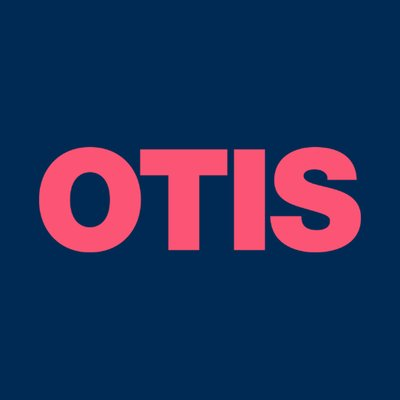
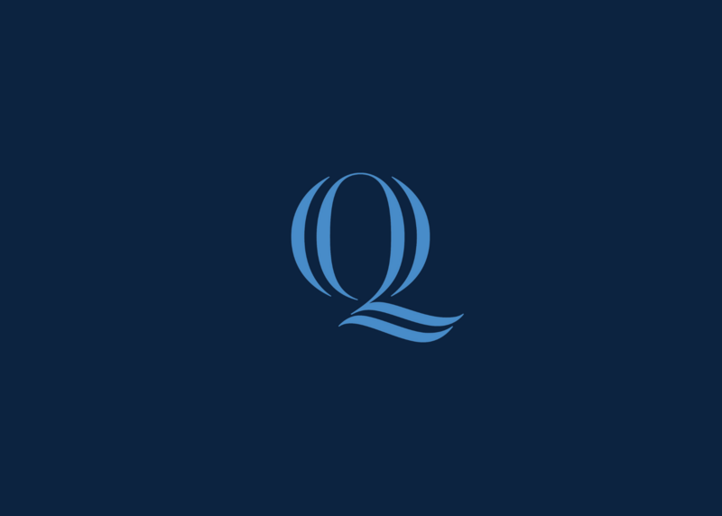

Software Engineer @ Otis Elevator | M.S. CS, Quinnipiac University
I'm a Software Engineer at Otis Elevator on the Compass team. Previously, at Stanley Black & Decker, I built Android applications for IoT and connected tool ecosystems and developed AWS Greengrass components for embedded IoT devices. I hold a B.S. in Computer Science from UConn and an M.S. in Computer Science from Quinnipiac University (GPA 4.0). I also contribute to open source, most recently to the Scribe language-learning keyboard project.

September 2026 – Present · Farmington, CT
May 2026 – August 2026 · Towson, MD · Digital Connected Products Team
June 2025 – May 2026 · New Britain, CT · Digital Connected Products Team
March 2026 – Present

M.S. Computer Science
January 2025 – May 2026 · GPA: 4.0
Faculty Award for Academic Excellence
Relevant Coursework:
B.S. Computer Science, Concentration in Software Design and Development
August 2019 – May 2023
Relevant Coursework:
A political intelligence platform ingesting data from 8+ federal government APIs (Congress.gov, CourtListener, Federal Register, roll call feeds) via a fault-tolerant Node.js/TypeScript pipeline using BullMQ queues, deployed on Raspberry Pi with PostgreSQL and Redis. Indexes 20,000+ bills and 500+ congressional members across two terms, using a raw-fetch staging table to reliably handle high-volume, unreliable upstream data. Includes a native Android client built with Kotlin and Jetpack Compose that consumes the backend REST API with real-time updates.
An embedded security system final project implementing two-factor authentication on constrained hardware, written in C.
View on GitHubA full client–server trivia game written in Java using both TCP and UDP. The server maintains global game state, manages multiple concurrent players via handler threads, and broadcasts updates. The client provides a Swing‑based GUI and communicates using a custom message protocol.
View on GitHubA graphical drawing tool built using the Allegro framework featuring draggable shapes, text rendering, event‑driven input handling, and an object‑oriented rendering pipeline.
View on GitHubA Java client–server system enabling multi‑client file synchronization. A centralized server tracks metadata and distributes updates, while clients maintain mirrored folders using TCP messaging, concurrency control, and file‑state reconciliation.
View on GitHubA MagicMirror² module displaying activity, health, and movement data. Features a modular architecture with a UI module and a Node.js backend helper. Uses configuration‑driven behavior and clear event‑based messaging within the MagicMirror runtime.
View on GitHubA C++ simulation of an evolving ecosystem built on an inheritance‑based class hierarchy. Models movement, predators, feeding, reproduction, and emergent environmental behavior.
View on GitHubA Python CLI application interacting with a relational database. Supports full CRUD workflows, schema‑aware validation, and table‑relationship management.
View on GitHubA geometric data structure that supports bounding‑box computation, point‑in‑polygon testing, and polygon intersection logic using algorithmic computational geometry.
View on GitHubLanguages
Mobile
Cloud
Systems & Protocols
Tools